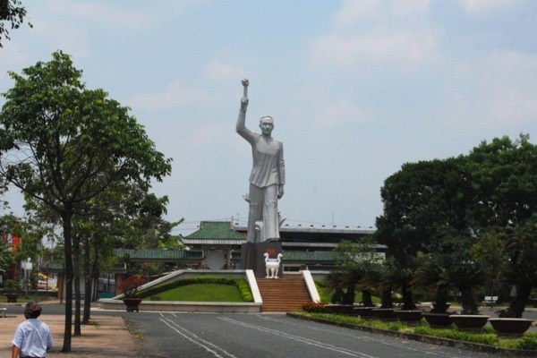
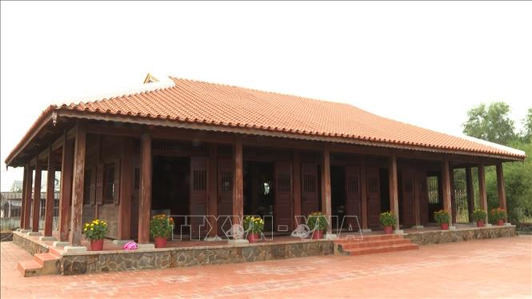

Giới thiệu địa danh


Vị trí: Tọa lạc tại thị trấn Đức Hòa, huyện Đức Hòa, tỉnh Long An.
Tổng quan: Khu di tích Ngã Ba Đức Hòa là một di tích lịch sử cấp quốc gia, được công nhận vào năm 1989 bởi Bộ Văn hóa – Thông tin. Nơi đây gắn liền với những sự kiện quan trọng trong phong trào cách mạng chống thực dân Pháp và đế quốc Mỹ. Từ cuộc biểu tình lớn năm 1930 đến những trận đánh ác liệt trong thời kỳ kháng chiến, di tích này đã trở thành biểu tượng của tinh thần bất khuất của nhân dân Long An.
Văn hóa: Với không gian được trùng tu, tôn tạo, khu di tích không chỉ là nơi tưởng niệm mà còn là điểm hội tụ nét văn hóa truyền thống cách mạng, là nơi giáo dục lý tưởng cho thế hệ trẻ hôm nay.
Các mốc lịch sử trọng đại
Đồng chí Võ Văn Tần tổ chức họp bí mật tại ao nước nhà ông Bộ Thỏ, chuyển Chi bộ An Nam Cộng sản Đảng thành Chi bộ Đảng Cộng sản Việt Nam làng Đức Hòa. Đây là một trong những chi bộ Đảng sớm nhất Nam Kỳ với 7 đồng chí tiên phong.
Hơn 5.000 nông dân Đức Hòa tập trung dưới sự lãnh đạo của đồng chí Châu Văn Liêm và Võ Văn Tần, phản đối chính sách sưu cao thuế nặng của thực dân Pháp, khẳng định sức mạnh của quần chúng nhân dân.
Sau khởi nghĩa Nam Kỳ, thực dân Pháp lập đài xử bắn tại đây. Nhiều chiến sĩ cách mạng đã hy sinh anh dũng trong các ngày 7, 8, 9/7/1941, để lại bài học về ý chí không khuất phục.
Địch biến Ngã Ba Đức Hòa thành cứ điểm quan trọng của Sư đoàn 25. Tuy nhiên, vào ngày 27/4/1975, quân giải phóng đã đánh chiếm cứ điểm này, mở đường tiến về Sài Gòn trong chiến dịch Hồ Chí Minh lịch sử.
Một số điểm đặc sắc tại khu di tích

Tượng đài Võ Văn Tần
Công trình nghệ thuật uy nghiêm ghi công vị anh hùng dân tộc.
.jpg)
Phù điêu Châu văn Liêm
Tái hiện sống động khí thế đấu tranh của quần chúng nông dân.

Khu nhà ông Bộ Thỏ
Nơi lưu giữ những kỷ vật và bằng chứng lịch sử quý giá.
Nét văn hóa & Lý do nổi tiếng
- Giá trị giáo dục truyền thống: Hội tụ lòng yêu nước và tinh thần chiến đấu dũng cảm của nhân dân Long An.
- Không gian tưởng niệm: Quần thể văn hóa - lịch sử gồm tượng đài, nhà trưng bày hiện vật uy nghiêm.
- Ghi dấu sự kiện 1930: Nổi tiếng với cuộc đấu tranh bi tráng của hơn 5.000 nông dân Đức Hòa.
- Chứng tích kiên trung: Lưu giữ hệ thống lô cốt, hầm ngầm và đài xử bắn minh chứng cho tội ác kẻ thù.
Vị trí Google Maps
📍 Địa chỉ: Võ Văn Tần, TT. Đức Hòa, huyện Đức Hòa, tỉnh Long An
Mở trong Google Maps ↗Cảm nghĩ của nhóm
Ngã Ba Đức Hòa không chỉ là một địa danh quen thuộc mà còn là biểu tượng lịch sử của tinh thần đấu tranh kiên cường ở Nam Bộ. Nơi đây từng chứng kiến nhiều sự kiện quan trọng của phong trào cách mạng, từ việc thành lập chi bộ Đảng đầu tiên ở địa phương đến cuộc biểu tình lớn năm 1930 của hàng nghìn nông dân phản đối áp bức. Trong những năm chiến tranh, khu vực này tiếp tục trở thành điểm nóng với các cuộc đàn áp và chiến đấu ác liệt, ghi dấu sự hy sinh anh dũng của nhiều chiến sĩ yêu nước.
Bên cạnh đó, Ngã Ba Đức Hòa mang đậm truyền thống cách mạng của người dân Nam Bộ – giàu lòng yêu nước, gan dạ và đoàn kết. Không gian di tích ngày nay được trùng tu trang nghiêm với tượng đài, khu trưng bày và công viên tưởng niệm, vừa là nơi tri ân các anh hùng liệt sĩ, vừa là điểm giáo dục truyền thống cho thế hệ trẻ. Với tôi, đây không chỉ là một di tích lịch sử mà còn là niềm tự hào của địa phương, nhắc nhở mỗi người về trách nhiệm gìn giữ và phát huy những giá trị quý báu của quá khứ.